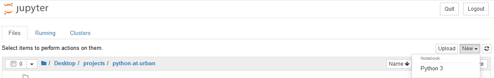

There are number of ways of running Python. This guide was written using Jupyter Notebook. To start, open the folder where Anaconda is installed and click "Jupyter Notebook". This will open local instance of Jupyter server in your browser (if not, point your browser to http://localhost:8888).
To start a new Python notebook, go to the right hand side, click "New", and then select "Python 3".

You can enter your code at the "In" cell of a notebook. Clicking Run or typing Shift + Enter will evaluate the code and send the results to the corresponding "Out" block.
To add a new cell, you can click Insert and then Insert Cell Above or Insert Cell Below. Alternatively, when an entire cell is highlighted (click outside the gray box where your cursor appears), you can enter A to insert a new cell above the current one or B to insert a new cell below the current one.
Finally, to delete a cell, you can click on Edit and then Delete Cells. Again, when a cell is highlighted with no cursor visible, you can also enter D+D to do the same thing.
[NOTE: Change screenshot to not have cursor inside cell]
# begins a comment. Any text that comes after # will not be run. Comments are useful for explaining decisions in scripts for other users and your "future self". It can also be useful during debugging, where code is "commented out" but not deleted.
# this text is not run
b = 10 # but text before the start of the comment will be
b
10
Using triple quotes allows you to comment over multiple lines. This is particularly useful in writing clearly documented functions. More on functions later in this training:
def triple(a):
'''
This function takes in a number as input
and returns triple that number.
'''
return 3*a
triple(65)
195
? before or after an object will return information about the object. ?? will return a function's source code, if applicable.
Additionally, depending on your IDE, sometimes hovering your cursor over the function can similarly give you info about it.
?print
Docstring: print(value, ..., sep=' ', end='\n', file=sys.stdout, flush=False) Prints the values to a stream, or to sys.stdout by default. Optional keyword arguments: file: a file-like object (stream); defaults to the current sys.stdout. sep: string inserted between values, default a space. end: string appended after the last value, default a newline. flush: whether to forcibly flush the stream. Type: builtin_function_or_method
Within a cell, you can execute simple mathematical operations:
| Operation | Description |
|---|---|
| x + y | sum of x and y |
| x - y | difference of x and y |
| x * y | product of x and y |
| x / y | quotient of x and y |
| x // y | quotient of x and y rounded down to nearest whole number |
| x % y | remainder of x / y |
| x ** y | x to the power of y |
3+4
7
10/5
2.0
2**5
32
= is the assignment operator. An object created on the right side of an assignment operator is assigned to a name on the left side of an assignment operator.
Assignment operators are important for saving the consequences of operations and functions. Operations without assignment operators can be printed to the console but will not be saved.
Here, we assign the value of 5 to a new variable a and can see that this value is saved.
a = 5
a
5
We can view the result of a*4 by just printing the expression, but if we want to save it, we can assign it to a new variable, b.
a*4
20
b = a*4
b
20
In Jupyter Notebook, only the last unassigned value will be automatically printed to the console. To display other output within a cell, use the print() function.
a
b
20
print(a)
print(b)
5 20
There are four basic data types in Python: integers, floating point numbers, strings, and booleans. We can check a variable's data type with the type() function.
1.) Integer, or int - used to store whole numbers
x = 10
type(x)
int
2.) Floating Point, or float - used to store numbers with decimal values
The basic math operations above can be used with any numeric variables, that is, both floats and ints
y = 3.14
type(y)
float
x + y
13.14
3.) Strings - used to store text variables
String values are enclosed between either single (') or double quotes ("). The sequence of characters in a string can be letters, numbers, special characters, or white space (space, tab, newline).
astring = 'Hello World!'
type(astring)
str
Triple quotes can be used to enclose long strings spanning multiple lines:
long_string = '''
We can use triple quotes
To create strings
That span multiple lines
'''
print(long_string)
We can use triple quotes To create strings That span multiple lines
4.) Boolean, or bool - used to store True or False values
x = True
type(x)
bool
There are several comparison operators that result in Boolean values, depending on whether the statement is True or False:
| Operation | Description |
|---|---|
| == | equals |
| != | does not equal |
| < | is strictly less than |
| <= | is less than or equal to |
| > | is strictly greater than |
| >= | is greater than or equal to |
3 == 4
False
3 < 4
True
4 * 5 != 100
True
There are also three main operators that can be applied directly to bool values:
| Operator | Result |
|---|---|
| x and y | True if x and y are True, else False |
| x or y | True if either x or y are True, else False |
| not x | True if x is False, False if x is True |
x = (5 > 4)
x
True
y = (0 > 10)
y
False
print(x and y)
print(x or y)
print(not x)
False True False
The bool, int, float, and string types can also be used as functions to convert values of one type to another.
float(5)
5.0
str(5.0)
'5.0'
Besides the four basic data types, there are a few important objects in Python that can store a collection of values.
Lists and tuples are the most common and basic way to store a collection of values. Both can store any number of values of heterogeneous data types.
Values in both lists and tuples are separated by commas and enclosed by square brackets [] for lists and parentheses () for tuples.
In practice, lists and tuples are nearly identical, but the one key difference between them is mutability (more on that below).
alist = [1, 2, 3, 4, 5]
atuple = (1, 'a', True)
print(alist)
print(atuple)
[1, 2, 3, 4, 5] (1, 'a', True)
Indexing allows us to access specific values within a collection. We use square brackets to index a list.
In Python, indexing begins at 0. This means that the first value in a sequence has an index of 0, the second has an index of 1, and so on.
my_list = [1, 2, 3, 4, 5]
my_list[0]
1
We can also use negative numbers to traverse a list in reverse. -1 refers to the last item in a list, -2 the second-to-last, and so on.
my_list[-1]
5
Multiple values in a sequence can be accessed using slicing, according to the following syntex:
object_name[start:stop], where the start index is included, and the end index is excluded. Slicing a list will also return a list.
my_list[1:3]
[2, 3]
If we want the slice to start at the beginning of a list, we can simply omit the first index in the slice. In the example below, we access the first 3 elements in a list.
my_list[:3]
[1, 2, 3]
Similarly, we can omit the last index in a slice to continue until the end of the sequence:
my_list[2:]
[3, 4, 5]
Lists are mutable objects, meaning that their values can be changed using the above operations of indexing and slicing.
Tuples are immutable objects whose values can be accessed but not altered. You can see below that trying to reassign the second item in the tuple yields an error.
Immutable objects like tuples (and strings!) allow programmers to make sure that assigned values aren't inadvertently overwritten.
new_list = [0, 0, 0]
new_list[1] = 100
new_list
[0, 100, 0]
new_tuple = (0, 0, 0)
new_tuple[1] = 100
--------------------------------------------------------------------------- TypeError Traceback (most recent call last) <ipython-input-33-8136561ff7ee> in <module> 1 new_tuple = (0, 0, 0) ----> 2 new_tuple[1] = 100 TypeError: 'tuple' object does not support item assignment
| Operation | Result |
|---|---|
len() |
Returns the length of the list |
sort() |
Sorts the list |
count(item) |
Counts # occurrences of item in list |
append(item) |
Adds item to the end of the list |
insert(index, item) |
Insert item at specific index in list |
item in list |
Returns True or False depending on whether item appears in list |
my_list = [1, 4, 3, 2, 5, 3]
len(my_list)
6
my_list.sort()
my_list
[1, 2, 3, 3, 4, 5]
my_list.count(3)
2
my_list.append(1000)
my_list
[1, 2, 3, 3, 4, 5, 1000]
my_list.insert(0, 'new_item')
my_list
['new_item', 1, 2, 3, 3, 4, 5, 1000]
Special mention to this last in operation, which can be widely used on lists, tuples, strings, and dictionaries (below):
print(7 in my_list)
print(7 not in my_list)
False True
Dictionaries are used to store pairs of objects in a key:value format. They are created with curly brackets {}. While keys must be strings or numbers, values can be of any data type.
A simple dictionary might be used to store information such as the names of students in a class and their respective grades on a test:
scores = {'Arvind': 94, 'Bob': 75, 'Camila': 100}
We can access a value in a dictionary by indexing with its key. For example:
scores['Arvind']
94
We can also access all dictionary keys, values, or pairs with the keys(), values(), and items() functions.
print(scores.keys())
print(scores.values())
print(scores.items())
dict_keys(['Arvind', 'Bob', 'Camila'])
dict_values([94, 75, 100])
dict_items([('Arvind', 94), ('Bob', 75), ('Camila', 100)])
More complex dictionaries can store lists of values. For example, if each student above has taken 3 tests in a semester, we can store that information in a list.
This is a different format for storing data than a typical spreadsheet or dataframe style with rows and columns, but you can see how different Python objects can be combined in meaningful ways.
In practice, you will mostly use Pandas to work with datasets, but these data types and structures are the building blocks!
scores = {'Arvind': [94, 80, 85], 'Bob': [75, 75, 81], 'Camila': [100, 93, 97]}
print(scores['Arvind']) # Get all of Arvind's scores
print(scores['Arvind'][0]) # Get Arvind's first test score
[94, 80, 85] 94
Sets are the final structure used to store collections of data in Python, and are less commonly used than both lists and dictionaries.
Unlike the other structures, sets are not ordered and duplicate values are not allowed. Sets are created with curly brackets as follows:
aset = {'TECH', 'METRO', 'IBP'}
aset
{'IBP', 'METRO', 'TECH'}
One useful application of a set is to obtain just the unique values in a list, by converting the list to a set.
duplicates_list = ['TECH', 'METRO', 'IBP', 'METRO']
set(duplicates_list)
{'IBP', 'METRO', 'TECH'}
float(5)
5.0
str(5.0)
'5.0'
if, elif, else¶The if, elif (i.e., else-if) and else statements are used to control the execution of code based upon a condition. The if statement checks the condition given, and executes the code if it evaluates to True.
x = 7
if x < 10:
print("x is less than 10")
x is less than 10
The if statement can be followed by an else statement that will execute if the condition given to if evaluates to False.
y = 15
if y < 10:
print("y is less than 10")
else:
print("y is greater than 10")
y is greater than 10
What if there are multiple conditions you wish to evaluate? You can nest if/else statements, but this can quickly become very messy and difficult to follow.
z = 20
if z < 10:
print("z is less than 10")
else:
if z < 15:
print("z is less than 15")
else:
print("z is greater than 15")
z is greater than 15
Instead, your if statement can be followed by one or more elif statements. Once a True statement is reached, the execution of the if/elif/else block stops.
z = 20
if z < 10:
print("z is less than 10")
elif z < 15:
print("z is less than 15")
elif z < 25:
print("z is less than 25")
else:
print("z is greater than or equal to 25")
z is less than 25
The for statement allows you to iterate over, and do something with, each item in a sequence. For a simple example, iterate over a list of numbers, calculate the square, and store the results in a new list:
# First, we create the list we want to loop through
a = [1, 2, 3, 4, 5]
# Next, we create an empty list which we will add new values to
a_squared = []
# Here, we create the loop. "number" can be called anything and is just a name given to each value of a that we loop through
for number in a:
a_squared.append(number**2) # Adds the square of each original value of a to the new list
a_squared
[1, 4, 9, 16, 25]
You can also make use of the range() function in Python to quickly generate an ordered sequence of numbers. Ranges can be included within the structure of a for loop like so:
r = range(6)
for number in r:
print(number)
0 1 2 3 4 5
And to view all of the numbers in a range, we can call the list function:
list(r)
[0, 1, 2, 3, 4, 5]
The range function takes three optional arguments: start, stop, and step. For instance, we can generate all multiples of 10 from 100 to 200 below. Note that like slicing above, the stop number is excluded, so we set stop=201 to make sure 200 is included.
tens = range(100, 201, 10)
list(tens)
[100, 110, 120, 130, 140, 150, 160, 170, 180, 190, 200]
A while loop will iterate until a condition is met. Be careful, as it can be easy to write a while loop with a condition that is never met, leaving your code running indefinitely in an infinite loop.
In this case, we continually increment the value of b by 1 until the while condition is no longer met.
b = 0
while b < 5:
print("b is {}".format(b)) # format() takes one or more arguments, in this case b, and inserts them between brackets {} when printing.
b += 1 # This is a more concise way of writing b = b + 1. We could do the same with any operator (-=, *=, /=, etc.)
b is 0 b is 1 b is 2 b is 3 b is 4
List comprehensions can provide a more concise way of coding a for loop. They are also often faster than for loops, due to their underlying implementation in Python.
Rewriting the prior for loop as a list comprehension:
a = [1, 2, 3, 4, 5]
# Again, we can use any name instead of "number"; see for yourself what happens when we change "number" to anything else.
a_squared = [number**2 for number in a]
a_squared
[1, 4, 9, 16, 25]
Conditional logic can also be added to list comprehensions. For instance, let's say we only want the words in a list that start with 's'.
Here's how we would do that with a traditional for loop:
words = ['salamander', 'gecko', 'snake']
s_words = []
# This time, we use "word" to signify that we loop over every word in the list "words". As always, we can use any name we want in place of "word".
for word in words:
if word.startswith('s'):
s_words.append(word)
s_words
['salamander', 'snake']
The list comprehension version of this can be done in just one line!
words = ['salamander', 'gecko', 'snake']
s_words = []
s_words = [word for word in words if word.startswith('s')]
s_words
['salamander', 'snake']
You can use similar synthax to create a dictionary as well.
a = [1, 2, 3, 4, 5]
squares_dict = {number:number**2 for number in a}
squares_dict[2]
4
Functions are collections of code that when called cause certain actions. They are one of the most important tools for your programming projects, as they make your work flexible, extensible, and replicable.
We define a function in Python using the def statement. What the function gives back is declared using the return statement. We'll take a simple math function and translate it to code:
$$f(x, y, z) = x^3 + y^2 + z$$
def simple_function(x, y, z):
return x**3 + y**2 + z
simple_function(1, 2, 3)
8
Functions in Python can have multiple return statements that depend on if/elif/else logic
def greater_than_y(x, y):
if x > y:
return True
else:
return False
greater_than_y(5, 10)
False
A function can also return multiple items.
def return_multiple(a, b, c):
return a**3, b**2, c
return_multiple(2,3,4)
(8, 9, 4)
We can unpack the results of this function into multiple variables.
a, b, c = return_multiple(2, 3, 4)
print("a is {}, b is {}, and c is {}".format(a, b, c))
a is 8, b is 9, and c is 4
Methods are a type of function that belong to certain objects or data structures. For instance, sort() is a method belonging to the list object.
Methods are called using the following syntax:
object_name.method_name() where any arguments of the method go inside the parentheses. Below are a few more examples of methods built into Python objects:
astr = 'Hello World!'
astr.lower()
'hello world!'
astr.split(' ')
['Hello', 'World!']
alist = [3, 2, 1]
alist.insert(4, 0)
alist
[3, 2, 1, 0]
Modules contain additional functions or sets of functions beyond what is included in base Python. Similar to libraries in R, there are modules in Python for almost everything: data import, wrangling, visualization, modeling, web scraping, text analysis, and much, much more.
We have to import modules before we can use them, typically at the top of a script or in the first cell of a Jupyter notebook. Once a module is imported, you can use all of its associated functions. Here is an example using the widely-used numpy module:
import numpy
numpy.arange(10)
array([0, 1, 2, 3, 4, 5, 6, 7, 8, 9])
Modules can be given nicknames upon import so that we don't have to type out their full name everytime we use a function. Certain modules have generally-agreed upon nicknaming conventions (e.g. numpy -> np, pandas -> pd), but you can pick any name you want.
import numpy as np
np.arange(10)
array([0, 1, 2, 3, 4, 5, 6, 7, 8, 9])